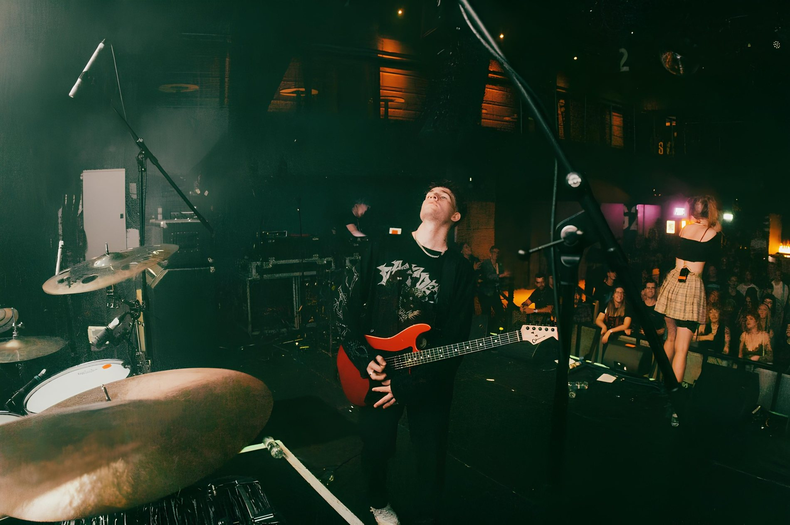
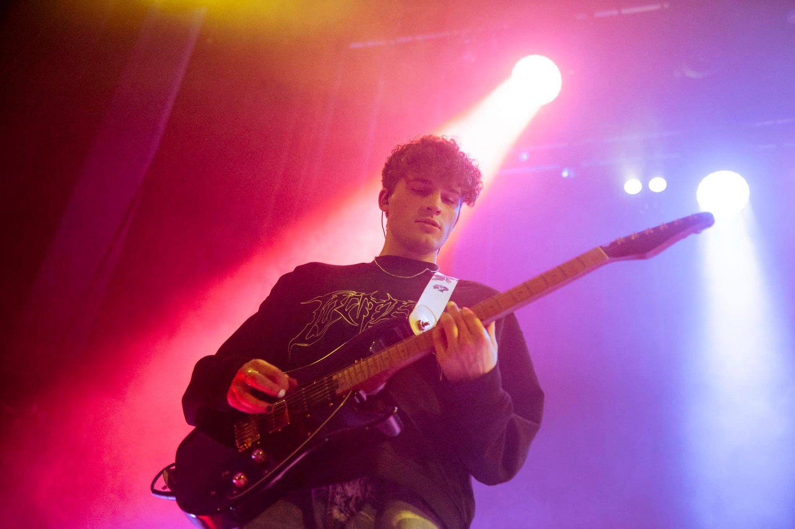
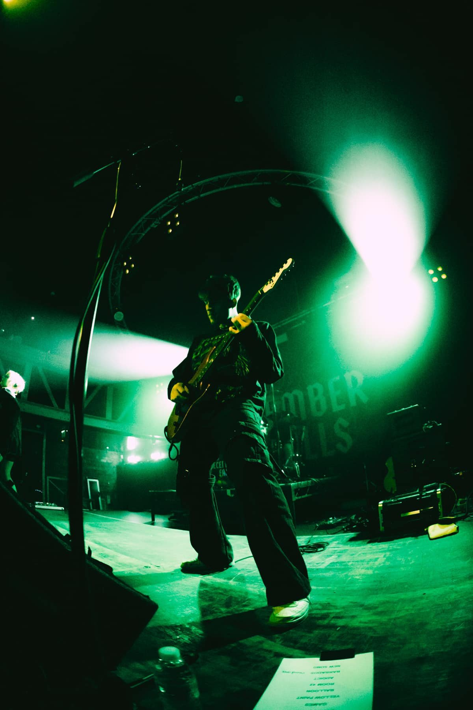
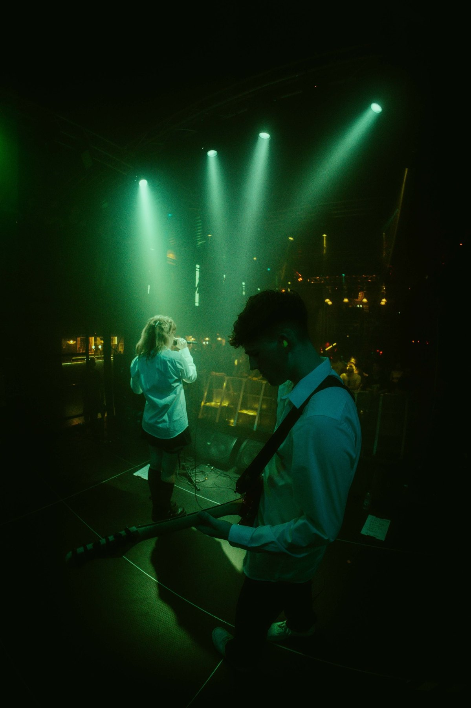
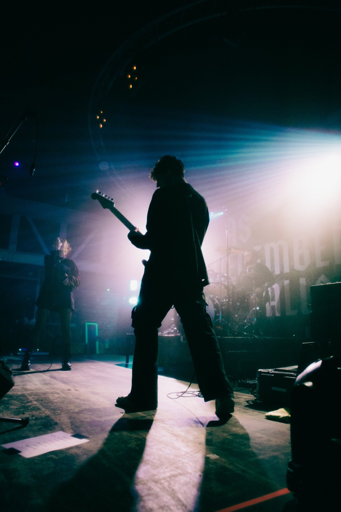
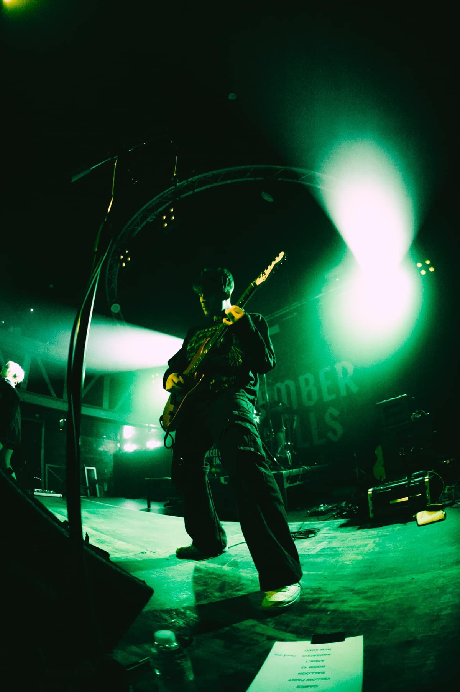
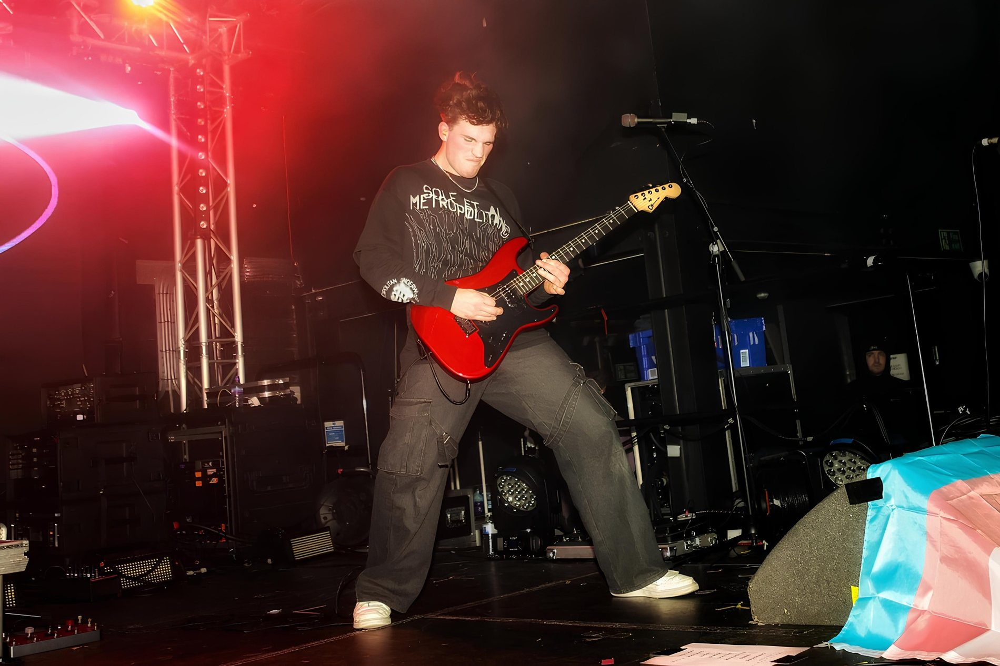
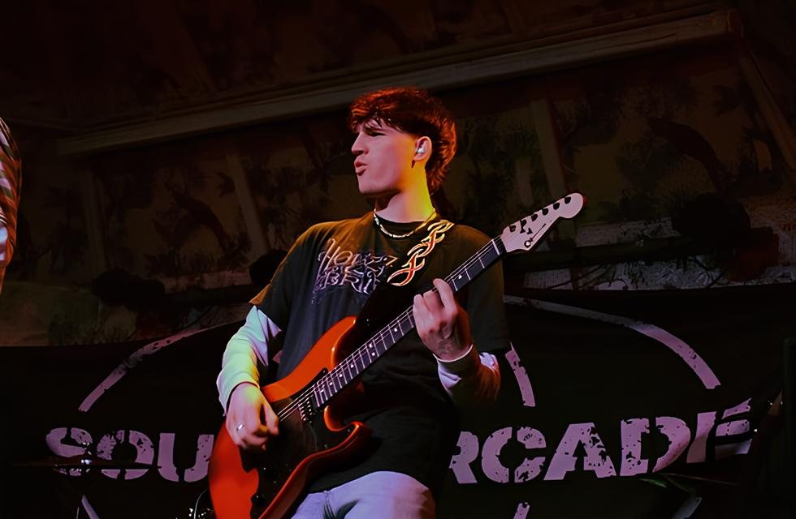
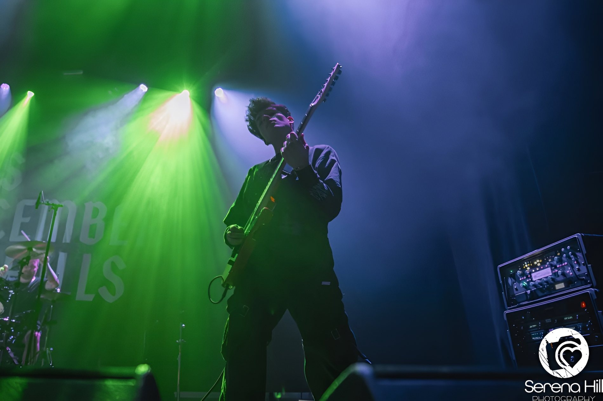

Work
Selected live, touring, festival, session, tech and industry work.
Sydney raised, UK based.
I moved to the UK from Sydney, Australia in 2022. Since then I’ve worked across live shows, tours, studio sessions, guitar tech, playback prep and production — mainly around alternative, pop and heavier guitar-focused music.
South Arcade
Arc Angel UK Tour. Reading & Leeds Festival 2024. I Was Here First UK Tour. As Everything Unfolds headline UK tour.
Jaxn
South Arcade: Arc Angel Tour. BBC Introducing: Manchester.
Lizzy Farrell
As December Falls: Join The Club EU/UK Tour. Misery Loves Company Festival. Burn It Down Festival. No Play Festival.
Entertainment Nation
Function band work across live events, weddings and private performances.
Zack Fowler
Area 11: All The Lights In The Sky Tour. WSTR 2024 Tour.
Mayah
The Great Prescape Festival, Brighton.
Start Small Studio
Studio work, guitar tracking, production support and session guitar.
James Walker
Studio project: “I Havnt Really Laughed Like This In Months Now”.
Andertons
Guitar sales, customer support, product knowledge, content support, logistics, copywriting, QC testing and repairs department support.
Cascade
Y Not Festival. Cascade headline UK tour.
Watch
Add as many MP4s as you want into the videos folder. The carousel handles the rest.
Details
Software, playback, live rigs and technical tools I use across sessions, rehearsals and shows.
Logic Pro X
Production, guitar tracking, editing, session prep and playback file exports.
Ableton Live
Live playback sessions, click tracks, cues, stems and show file organisation.
Cubase
Editing, stems, session prep and playback organisation.
Show files
Clicks, cues, stems, MIDI changes and practical live playback setup.
Quad Cortex
Live guitar tones, presets, routing and tour-ready digital rigs.
Kemper
Patches, consistent show tones and profiling-based live rigs.
Line 6 units
Patch management, digital guitar setups and live-ready sounds.
X32 Rack / XR18
Routing, rehearsal setups, IEM-style workflows and playback integration.
Allen & Heath
Stage routing, live audio workflow and practical tech support.
SSL
Clean signal flow, studio workflow and session familiarity.
Stage guitars
Changeovers, tuning stability, basic repairs and keeping sets running cleanly.
Show flow
Set organisation, rig checks, transitions and practical stage problem-solving.
Photos
Live shots, touring photos and stage moments.








